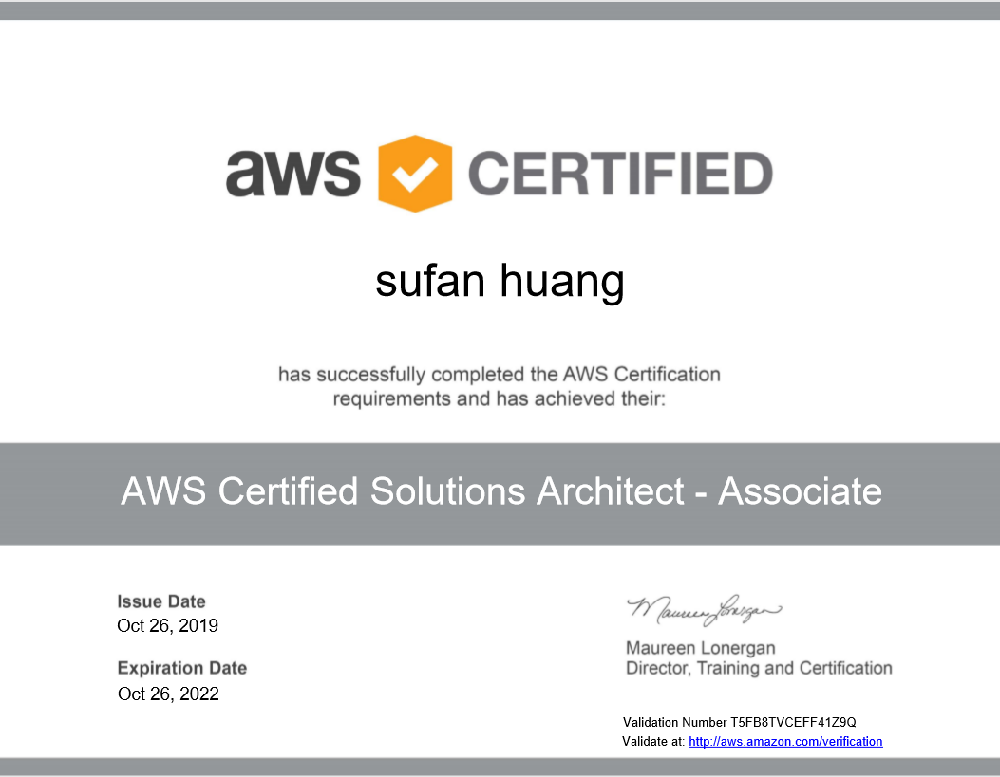

** October 26th marked the official date of me receiving the badge for "AWS Certified Solution Architect-Associate". I like to wrapped up by writing the first post on my new blog website.

I started to realize the importance of official certifications/credential on my resume, after going to a Hacker event at the end of Auguest. There are couple things that pushed me forward: 1. Almost all the company onsite are using cloud technology, mostly AWS in one way or another. 2. I have Liberal Art degrees, and working as a teacher in a professional level is not very convincing that I have the mindset in technical field.
Prior to make the decision of diving into AWS, I have make a simple project using AWS lambda, dynamoDb, apiGate way. It took me a whole month to figure out different parts and how to put them together using serverless framework. Even after the project, the AWS ecosystem still feels like a big matrix to me.
The serverless Stack https://serverless-stack.com/ is the first project that helps me to understand AWS, I spent about a week following the tutorial, and implemented a note app in my own account.
Then I go ahead to finish my full-stack business website for a friend of my. I use lambda, apiGateway, and dynamodb for the administrator page to persist backend data. At this point, I only know these technologies that I used, without a clue how EC2, VPC, Subnets ect, work with each other.
Then I started to find some structure tutorial to cover the whole road map of AWS. Consecutively, I followed these three course:
AWS Certified Cloud Practitioner by IAAS ACADEMY
AWS Certified Solutions Architect Associate by Rick Crisci
AWS Certified Developer Associate by Stephane Maarek
The majority of the courses content are conceptual learning, except the last tutorial provides quite a lot of hands on activity using amazon console. A lot of new concepts, and how each of them work together with each other. I continued one course soon after another because I like to see how different instructors explain them differently, and reinforce the concepts for me at the same time. It took me about 3 weeks to sit through these three courses,from September 8th to September 27th, the day I passed the first AWS test, Certified Cloud Practitioner exam.
At this time, I felt myself enter the matrix of AWS. I am able to recognize and name those service. But I wanted to know more. These are the steps I took going forward:
Read AWS books on my Kindle that interests me, which includes: a. Top 50 AWS Associate Architect Interview Questions and Answers by Knowledge Powerhouse b. AWS Certified Solutions Architect 2019 Practice by Chandra Prakash Busam
Read the AWS FQAS of different services.
Follow Amazon re:invent talks focusing on VPC, S3, DYNAMODB, CLOUDFORMATION, etc. It is interested to hear from the engineers who participated in the making of these services.
Make a todo-backend and a blog-backend using serverless. These projects make me read the aws-sdk documentation and figure out how to find information and write code.
And on 26th of October, I went to the test room with confidence as well as anxiety. But I really feel like expending my knowledge greatly in one month of studying, and exited to test my learning by entering the center.